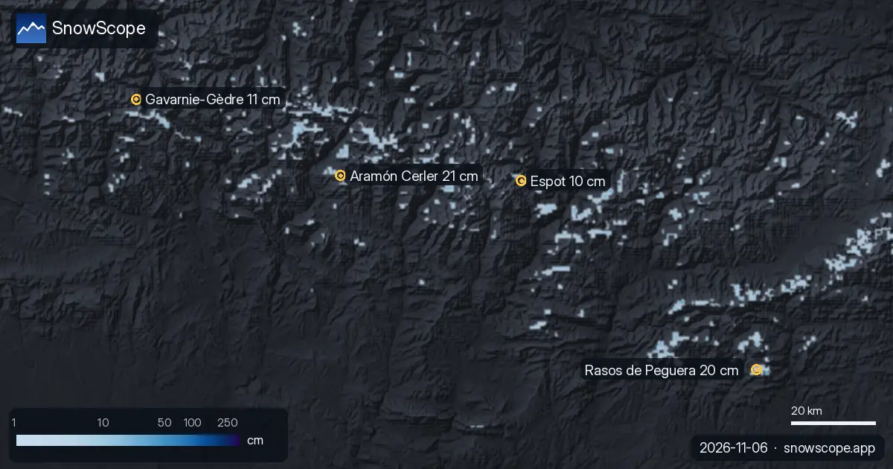

Pyrenäen: Mehr oder weniger Schnee als üblich? (6. November)
Wir haben den Schnee von heute in 4 Skigebieten in den Pyrenäen mit demselben Datum in jedem der letzten 46 Winter verglichen. 1 liegen deutlich über dem Normalwert.
Die Live-Schneeprognose für Aramón Cerler in der SnowScope-AppSchneehöhen, Pulverschnee-Alarme und 3D-Karte, gratis.
Im Vergleich mit früheren Wintern
Auf 2.060 m in Aramón Cerler liegen die heutigen 0 cm nahe am Normalwert: mehr als in 17 der letzten 46 Winter (üblich: 1 cm).
Ein guter Start in Rasos de Peguera: Auf 1.931 m zeigt unser Modell heute 4 cm, mehr als an diesem Datum in 44 der letzten 46 Winter (üblich: 0 cm).
Auf 2.050 m in Gavarnie-Gèdre liegen die heutigen 0 cm nahe am Normalwert: mehr als in 16 der letzten 46 Winter (üblich: 1 cm).
Auf 1.900 m in Espot liegen die heutigen 1 cm nahe am Normalwert: mehr als in 19 der letzten 46 Winter (üblich: 1 cm).
| Skigebiet | Schneehöhe | Neuschnee, 72 h | Erwartet, nächste Tage | Gipfel |
|---|---|---|---|---|
| Aramón Cerler | 21 cm | 2 cm | 1 cm | 2.618 m |
| Rasos de Peguera | 20 cm | 3 cm | 0 cm | 2.036 m |
| Gavarnie-Gèdre | 11 cm | 0 cm | 2 cm | 2.283 m |
| Espot | 10 cm | 2 cm | 1 cm | 2.290 m |
Wo heute Schnee liegt
Von diesen Skigebieten hat Aramón Cerler heute den meisten Schnee in den oberen Hängen, etwa 21 cm; danach folgen Rasos de Peguera 20 cm und Gavarnie-Gèdre 11 cm.
26 von 53 Skigebieten in den Pyrenäen haben heute Schnee in den oberen Hängen, und unser Modell zählt 660 km² Schneefläche.
Die Werte der Skigebiete sind Modellschätzungen für die oberen Hänge; Messstationen messen an einem Punkt, am angegebenen Tag.
Was als Nächstes kommt
Bis zum 9. November ergibt unsere Prognose 2 cm in Gavarnie-Gèdre, 1 cm in Aramón Cerler und 1 cm in Espot.
Prognosen für einige Tage können sich ändern: Schau am Tag vor der Abfahrt noch einmal auf die Karte.
Tipps für Skifahrer
- Such den Schnee weit oben und an Nordhängen: Dort hält er am längsten, Südhänge verlieren ihn zuerst in der Sonne.
- Schnee auf der Karte heißt nicht, dass das Skigebiet offen ist: Prüfe Lifte und Öffnungstermine auf der Website des Skigebiets.
- Früher Schnee ist dünn. Bleib auf offenen, präparierten Pisten: Steine und Gras liegen oft knapp darunter.
- Stell in der SnowScope-App einen Pulverschnee-Alarm ein, damit du weißt, wann Aramón Cerler Neuschnee bekommt.
Zu diesen Zahlen
Die Schneehöhen der Skigebiete sind der meiste Schnee in den oberen Hängen laut SnowScope-Schneemodell (etwa 1 km, Lauf vom 5. November); es sind Schätzungen für eine Fläche, keine Messung an einem Punkt. Werte von Messstationen sind Messungen am angegebenen Tag. Prognosen können sich ändern. Lies vor dem Freeriden immer den offiziellen Lawinenlagebericht.
Offizielle Lawinenlageberichte: Météo-France / Meteocat / AEMET
Diesen Bericht zitieren
Für Forschung, Lehre oder Presse: Zahlen und Grafiken sind unter CC BY 4.0 mit dieser Quellenangabe frei nutzbar.
SnowScope (2026), Pyrenäen: Mehr oder weniger Schnee als üblich? (6. November), https://snowscope.app/blog/de/2026/11/pyrenees-snow-vs-past-winters-6-november-2026.html, abgerufen am 2026-11-06
SnowScope (Atlas Labs). (2026, November 6). Pyrenäen: Mehr oder weniger Schnee als üblich? (6. November). SnowScope snow reports. https://snowscope.app/blog/de/2026/11/pyrenees-snow-vs-past-winters-6-november-2026.html
BibTeX
@misc{snowscope2026pyreneessnowvspastwinter,
author = {{SnowScope (Atlas Labs)}},
title = {Pyrenäen: Mehr oder weniger Schnee als üblich? (6. November)},
year = {2026},
month = nov,
howpublished = {\url{https://snowscope.app/blog/de/2026/11/pyrenees-snow-vs-past-winters-6-november-2026.html}},
note = {Published 2026-11-06 12:08 UTC; accessed 2026-11-06}
}· CC BY 4.0 · Methoden, Daten und Werkzeuge →
Aramón Cerler: Schnee und Temperatur nach Höhe, dieser Winter vs letzter (Werkzeuge) →